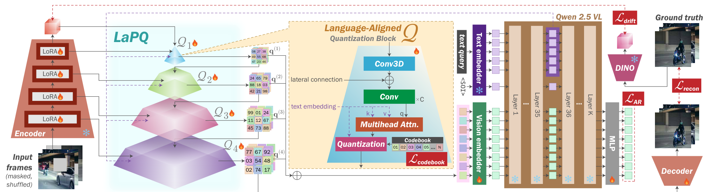

PyraTok builds on a pretrained video VAE and applies Language-aligned Pyramidal Quantization (LaPQ) at multiple encoder depths. A shared large binary codebook discretizes the resulting hierarchy into compact, semantically structured video tokens. Text-guided quantization provides local alignment at each scale, while an autoregressive objective over the token hierarchy enforces global sequence coherence. A hierarchical semantic codebook loss links the shared codebook to text embeddings and regularizes consistency across pyramid levels.
PyraTokLanguage-Aligned Pyramidal Tokenizer for Video Understanding and Generation
CVPR 2026
TL;DR
We introduce PyraTok, a video tokenizer whose Language-aligned Pyramidal Quantization (LaPQ) discretizes features at multiple encoder depths into a shared binary codebook of approximately 48K tokens. Text guidance aligns each pyramid level locally, while an autoregressive objective aligns the token hierarchy globally. This dual alignment preserves semantic consistency across scales and time, supporting high-resolution reconstruction, generation, and zero-shot video understanding.
Abstract
Discrete video VAEs underpin modern text-to-video generation and video understanding systems, yet existing tokenizers typically learn visual codebooks at a single scale with limited vocabularies and shallow language supervision, leading to poor cross-modal alignment and zero-shot transfer. We introduce PyraTok, a language-aligned pyramidal tokenizer that learns semantically structured discrete latents across multiple spatiotemporal resolutions.
PyraTok builds on a pretrained video VAE and a novel Language aligned Pyramidal Quantization (LaPQ) module that discretizes encoder features at several depths using a shared large binary codebook, yielding compact yet expressive video token sequences. To tightly couple visual tokens with language, PyraTok jointly optimizes multi-scale text-guided quantization and a global autoregressive objective over the token hierarchy.
Across ten benchmarks, PyraTok delivers state-of-the-art video reconstruction, consistently improves text-to-video quality, and sets new zero-shot performance on video segmentation, temporal action localization, and video understanding, scaling robustly to up to 4K/8K resolutions.
Contributions
- Multi-scale semantically aligned VAE. We introduce PyraTok, a multi-scale semantically aligned Video VAE that couples spatiotemporal quantization with dual semantic alignment, enabling coarse-to-fine understanding and efficient video generation.
- LaPQ quantization. PyraTok leverages LaPQ, a novel language-aligned pyramidal quantization framework, designed to hierarchically encode multi-scale video representations through lateral encoder connections at each stage. Our design enables efficient use of a large ∼48K token vocabulary, with up to 95% codebook utilization.
- Dual semantic alignment. We propose a dual semantic alignment strategy that injects text-conditioned priors at every LaPQ level (local alignment) and refines them with an autoregressive objective over the sequence of quantized tokens (global alignment). This jointly enforces token-level grounding and sequence-level coherence, preventing semantic drift across scales and time.
- Hierarchical semantic codebook loss. We further introduce a hierarchical semantic codebook loss that ties a shared binary codebook to text embeddings and preserves semantic consistency across pyramid levels through stage-wise KL regularization.
PyraTok Method

Loading...
Quantitative Results
Reconstruction quality
Reconstruction quality on WebVid-10M and COCO-Val, with parameter counts and inference latency.
| Method | Parameters | Latency (ms) | WebVid · PSNR ↑ | WebVid · SSIM ↑ | WebVid · LPIPS ↓ | COCO · PSNR ↑ | COCO · SSIM ↑ | COCO · LPIPS ↓ |
|---|---|---|---|---|---|---|---|---|
| CogVideoX | 288M | 712 | 29.92 | 0.811 | 0.141 | 30.11 | 0.833 | 0.111 |
| 3D-MBQ-VAE [44] | 317M | 650 | 33.00 | 0.848 | 0.092 | 32.11 | 0.858 | 0.108 |
| WAN 2.2 | 222M | 449 | 32.94 | 0.841 | 0.101 | 33.43 | 0.861 | 0.103 |
| OmniTokenizer | 82M | 444 | 32.03 | 0.812 | 0.152 | 32.09 | 0.845 | 0.141 |
| LARP | 183M | 689 | 33.03 | 0.851 | 0.091 | 34.26 | 0.853 | 0.089 |
| TokenFlow | 176M | 600 | 28.21 | 0.799 | 0.189 | 30.11 | 0.811 | 0.177 |
| VideoVae+ | 192M | 555 | 29.17 | 0.812 | 0.201 | 31.45 | 0.832 | 0.162 |
| TexTok | 173M | 661 | 27.42 | 0.831 | 0.222 | 29.29 | 0.841 | 0.181 |
| LG-VQ | 168M | 598 | 30.23 | 0.807 | 0.173 | 31.32 | 0.836 | 0.152 |
| TokLIP | 207M | 604 | 31.28 | 0.837 | 0.152 | 33.42 | 0.849 | 0.105 |
| SweetTok | 128M | 432 | 32.32 | 0.842 | 0.137 | 32.78 | 0.847 | 0.123 |
| PyraTok (Ours) | 192M | 492 | 35.72 | 0.879 | 0.066 | 36.05 | 0.885 | 0.071 |
Beyond reconstruction: generation and understanding
Ten benchmarks cover reconstruction, generation, segmentation, action localization, and video understanding. The reconstruction comparison appears above. Choose a task below to explore the remaining results.
Text-to-video generation
Replacing the tokenizer improves generation quality across three backbones on WebVid-10M. Compare each model with and without PyraTok.
All model scores
| Model | FVD ↓ | TC ↑ |
|---|---|---|
| MotionAura | 374 | 204 |
| MotionAura + PyraTok | 365 | 246 |
| Open MAGVITv2 | 433 | 191 |
| Open MAGVITv2 + PyraTok | 411 | 214 |
| OmniGenV2 | 398 | 185 |
| OmniGenV2 + PyraTok | 377 | 208 |
Text-to-video generation
Replacing the tokenizer improves generation quality across three backbones on WebVid-10M. Compare each model with and without PyraTok.
All model scores
| Model | FVD ↓ | TC ↑ |
|---|---|---|
| MotionAura | 374 | 204 |
| MotionAura + PyraTok | 365 | 246 |
| Open MAGVITv2 | 433 | 191 |
| Open MAGVITv2 + PyraTok | 411 | 214 |
| OmniGenV2 | 398 | 185 |
| OmniGenV2 + PyraTok | 377 | 208 |
Zero-shot video segmentation
Text-guided segmentation on YouTube-VIS 2021 and OVIS. Training settings are shown for each method so supervised, unsupervised, and zero-shot results remain distinguishable.
All model scores
| Model | Training | YouTube-VIS 2021 · mAP ↑ | YouTube-VIS 2021 · Jaccard ↑ | OVIS · mAP ↑ | OVIS · Jaccard ↑ |
|---|---|---|---|---|---|
| CLIP-VIS | Supervised | 44.2 | 76.31 | 18.6 | 60.09 |
| VideoCutLER | Unsupervised | 17.1 | 62.23 | — | — |
| UVIS | Unsupervised | 17.5 | 63.11 | 3.5 | 36.71 |
| VideoVAE+ | Zero-shot | 12.33 | 51.21 | 2.8 | 29.91 |
| LARP | Zero-shot | 10.52 | 49.37 | 1.7 | 28.45 |
| OmniTokenizer | Zero-shot | 14.54 | 51.12 | 2.8 | 33.27 |
| PyraTok | Zero-shot | 24.54 | 66.56 | 8.9 | 49.44 |
Temporal action localization
Average mAP under a 50% seen / 50% unseen split on THUMOS14 and ActivityNet v1.3. The comparison includes supervised and zero-shot methods.
All model scores
| Model | Training | THUMOS14 · Avg. mAP ↑ | ActivityNet v1.3 · Avg. mAP ↑ |
|---|---|---|---|
| STALE | Supervised | 22.2 | 20.5 |
| DeTAL | Supervised | 24.1 | 22.4 |
| STOV-TAL | Supervised | 48.8 | 29.6 |
| STOV-TAL | Zero-shot | 31.5 | 28 |
| VideoVAE+ | Zero-shot | 23.12 | 21.37 |
| OmniTokenizer | Zero-shot | 23.47 | 22.48 |
| SweetTok | Zero-shot | 25.32 | 24.53 |
| LARP | Zero-shot | 27.42 | 25.53 |
| PyraTok | Zero-shot | 33.17 | 29.11 |
Video understanding and classification
Accuracy on MVBench and Kinetics-400, Kinetics-600, and Kinetics-700. The VAE column identifies models that use a video autoencoder.
All model scores
| Model | VAE | MVBench · Accuracy ↑ | Kinetics-400 · Accuracy ↑ | Kinetics-600 · Accuracy ↑ | Kinetics-700 · Accuracy ↑ |
|---|---|---|---|---|---|
| InternVL3-78B | No | 79.2 | — | — | — |
| Qwen2.5-72B | No | 71.3 | — | — | — |
| InternVL3-38B | No | 76 | — | — | — |
| Qwen2.5VL-7B | No | 67.2 | — | — | — |
| Qwen2.5VL-3B | No | 67 | — | — | — |
| InternVL | No | — | 69.1 | 68.9 | 60.6 |
| InternVideo2 | No | — | 73.1 | 72.8 | 64.9 |
| VideoPrism-g | No | — | 76.4 | — | — |
| SigLIP2-g-opt | No | — | 69.8 | 67 | 61.8 |
| PEcoreG | No | — | 76.9 | 76.1 | 69.1 |
| VILA-U | Yes | 81.21 | — | — | — |
| VideoVAE+ | Yes | — | 63.32 | 61.27 | 55.55 |
| OmniTokenizer | Yes | 79.44 | 65.03 | 62.75 | 58.71 |
| SweetTok | Yes | — | 67.54 | 65.01 | 61.45 |
| LARP | Yes | 83.21 | 69.27 | 68.52 | 66.89 |
| PyraTok | Yes | 86.03 | 78.43 | 77.11 | 74.08 |
Qualitative Results
Text-to-video generation
Text-guided video localization
PyraTok’s attention maps highlight the objects named in a text query. The clips below show responses to bikes, Nike shoes, and a football.
Bikes
Prompt: Two bikes cruising on the road.
Nike shoes
Prompt: Player in Nike shoes kicking a football.
Football
Prompt: Player in Nike shoes kicking a football.
BibTeX
@inproceedings{susladkar2026pyratok,
title={PyraTok: Language-Aligned Pyramidal Tokenizer for Video Understanding and Generation},
author={Susladkar, Onkar and Prakash, Tushar and Juvekar, Adheesh and Nguyen, Kiet A. and Jang, Dong-Hwan and Dhillon, Inderjit S and Lourentzou, Ismini},
booktitle={Proceedings of the IEEE/CVF Conference on Computer Vision and Pattern Recognition (CVPR)},
year={2026}
}